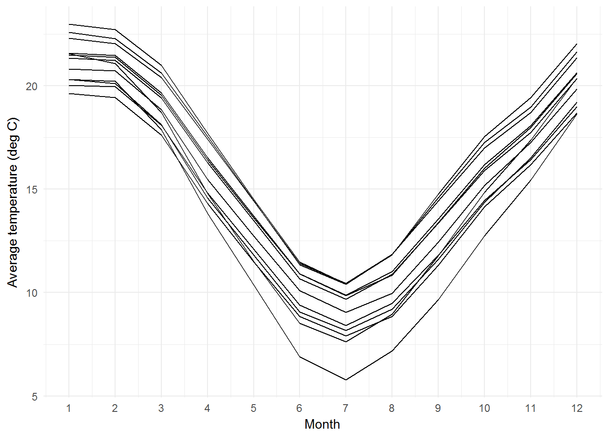

To install the speciesmap package from github, use the following command. The package is not yet available on CRAN.
devtools::install_github("remkoduursma/speciesmap")Note the message on loading the package. When using speciesmap, please cite the original data sources!
library(speciesmap)## The speciesmap package is an interface to the following services -
## please visit those sites for information and CITATIONS:
## Worldclim - www.worldclim.org
## ALA - www.ala.org.au
## GBIF - www.gbif.org
## CGIAR-CSI - http://www.cgiar-csi.org/data/global-aridity-and-pet-databaseIf you are only interested in extracting species occurrences, speciesmap provides thin wrappers around rgbif and ALA4R packages. The output is harmonized and simplified, returning a dataframe with species, latitude and longitude for all occurrences returned by the database. Some checking on the output is also performed, as well as useful error messages when either data service is unresponsive. If no records are found a dataframe with the species, and a single NA for latitude and longitude is returned.
To extract occurrences from the ALA,
benthocc <- get_occurrences_ala("Eucalyptus benthamii") This gives (first 6 rows shown):
| species | longitude | latitude | |
|---|---|---|---|
| 1 | Eucalyptus benthamii | 150.0000 | -33.0000 |
| 2 | Eucalyptus benthamii | 150.0000 | -33.0000 |
| 3 | Eucalyptus benthamii | 176.0000 | -37.0000 |
| 4 | Eucalyptus benthamii | 149.1167 | -35.2667 |
| 17 | Eucalyptus benthamii | 150.4000 | -33.8000 |
| 18 | Eucalyptus benthamii | 150.3800 | -33.8200 |
The corresponding function for GBIF is get_occurrences_gbif.
Both get_occurrences_* functions are vectorized, so you can do:
benthocc <- get_occurrences_ala(c("Eucalyptus benthamii","Eucalyptus globulus"))for example.
One of the motivating factors for writing speciesmap is the ability to quickly rasterize occurrences into a spatial resolution that matches climate data (in particular, WorldClim). At the moment only one resolution is possible, but this issue will be removed in a future version.
Rasterizing works by storing the latitude and longitude of 10min degree cells where the species has been observed at least once. The idea is to remove bias towards heavily sampled areas, since the main objective of the package is to study climate occupancy of species.
We can simply do,
benthoccras <- rasterize_occurrences(benthocc)The resulting object looks just like before, but has fewer rows. In this case, this rare species of Eucalyptus occurs in only thirteen 10min cells.
The main function in speciesmap is climate_presence, which performs all steps at once:
It is necessary to set the path to where the WorldClim data will be downloaded. It is of course recommended you recycle this between projects. Use the options as below.
For potential evapotranspiration, the package extracts data from the CGIAR-CSI database (Zomer et al.), which has to be manually downloaded first.
To do this, visit (), and manually download the file ‘Global PET - Annual.zip’ (follow ‘Download from the HarvestChoice Dropbox’), and unzip it in some directory. Then set the path with options() as shown below.
In this example we find potential evapotranspiration, average temperature, maximum temperature at the rasterized locations of Eucalyptus benthamii.
options(worldclimpath="c:/data/worldclim",
zomerpetpath="c:/data/zomer")
benthclim <- climate_presence("Eucalyptus benthamii", database="ALA",
vars=c("pet","tavg","tmax"))The output is monthly, in wide format (shown below are only the first few columns and first few rows), with the exception of PET, which is only provided as an annual value.
| species | longitude | latitude | tavg_1 | tavg_2 | tavg_3 | tavg_4 | tavg_5 |
|---|---|---|---|---|---|---|---|
| Eucalyptus benthamii | 150.0833 | -33.08333 | 21.55500 | 21.07525 | 18.70675 | 14.78325 | 11.50100 |
| Eucalyptus benthamii | 150.7500 | -33.58333 | 22.96700 | 22.70400 | 20.97100 | 17.70400 | 14.49050 |
| Eucalyptus benthamii | 150.4167 | -33.75000 | 19.63175 | 19.43775 | 17.60500 | 14.30125 | 11.47475 |
| Eucalyptus benthamii | 150.5833 | -33.75000 | 21.49150 | 21.37075 | 19.54650 | 16.40525 | 13.59300 |
| Eucalyptus benthamii | 150.4167 | -33.91667 | 20.79825 | 20.70950 | 18.82900 | 15.46750 | 12.73600 |
| Eucalyptus benthamii | 150.5833 | -33.91667 | 21.57100 | 21.47425 | 19.65025 | 16.52100 | 13.69700 |
The monthly values can be reshaped, using a combination of melt (from reshape2), separate and spread (both from tidyr):
library(tidyr)
library(reshape2)
benthlong <- benthclim %>%
dplyr::select(-PET) %>%
melt(id.vars=c("species","longitude","latitude")) %>%
separate("variable", c("variable","month")) %>%
spread(variable, value)
head(benthlong)## species longitude latitude month tavg tmax
## 1 Eucalyptus benthamii 149.0833 -35.25 1 20.31100 25.77875
## 2 Eucalyptus benthamii 149.0833 -35.25 10 12.74300 19.59350
## 3 Eucalyptus benthamii 149.0833 -35.25 11 15.44475 22.29775
## 4 Eucalyptus benthamii 149.0833 -35.25 12 18.64375 25.49450
## 5 Eucalyptus benthamii 149.0833 -35.25 2 20.20525 25.67675
## 6 Eucalyptus benthamii 149.0833 -35.25 3 17.86575 23.33700Long format may be useful to make a plot of average temperature vs. Month for all locations.
library(ggplot2)
ggplot(benthlong, aes(x=as.numeric(as.character(month)), y=tavg, group=interaction(latitude, longitude))) +
geom_line() +
theme_minimal() +
labs(x="Month", y="Average temperature (deg C)") +
scale_x_continuous(breaks=1:12)
Using the long format, it is straightforward to make any sort of summary variable by location that you want. Alternatively, you can use the built-in annualize_clim, like so:
# Only first 6 rows shown.
# annualize_clim renames tavg into MAT (mean annual temperature),
# and prec into MAP (mean annual precipitation)
library(magrittr)
benthclim %>% annualize_clim## species longitude latitude MAT tmax PET
## 1 Eucalyptus benthamii 150.0833 -33.08333 14.75913 20.28431 1224
## 2 Eucalyptus benthamii 150.7500 -33.58333 17.19596 23.33217 1366
## 3 Eucalyptus benthamii 150.4167 -33.75000 14.03294 18.90269 1147
## 4 Eucalyptus benthamii 150.5833 -33.75000 15.99740 21.48617 1300
## 5 Eucalyptus benthamii 150.4167 -33.91667 15.19390 20.17383 1213
## 6 Eucalyptus benthamii 150.5833 -33.91667 16.09660 21.70408 1307The above result gives annual values for each recorded location of the species. The final step is to summarize these climate variables across the entire range of the species. Once again you can produce summaries yourself, or use the built-in function aggregate_clim, which applies functions to each climate column. The default is to calculate the mean and 5%, 95% quantiles:
benthclim %>% annualize_clim %>% aggregate_clim## species ncells MAT_mean MAT_q05 MAT_q95 PET_mean PET_q05
## 1 Eucalyptus benthamii 13 15.42152 13.6772 17.06512 1263.583 1164.6
## PET_q95 tmax_mean tmax_q05 tmax_q95
## 1 1340.15 20.93329 19.08966 23.19164The result shown is for a single species, but if multiple species were present in the search, one row per species is shown.
Finally, you can also provide custom functions (note that function names have to be quoted).
benthclim %>% annualize_clim %>% aggregate_clim(., funs=c("min", "median", "max") )## species ncells MAT_max MAT_median MAT_min PET_max
## 1 Eucalyptus benthamii 13 17.19596 15.52423 13.24242 1366
## PET_median PET_min tmax_max tmax_median tmax_min
## 1 1285.5 1147 23.33217 20.88524 18.90269